Internship Analytics
Task 1 — Foundations (Iris Dataset)
Data Cleaning & Preprocessing
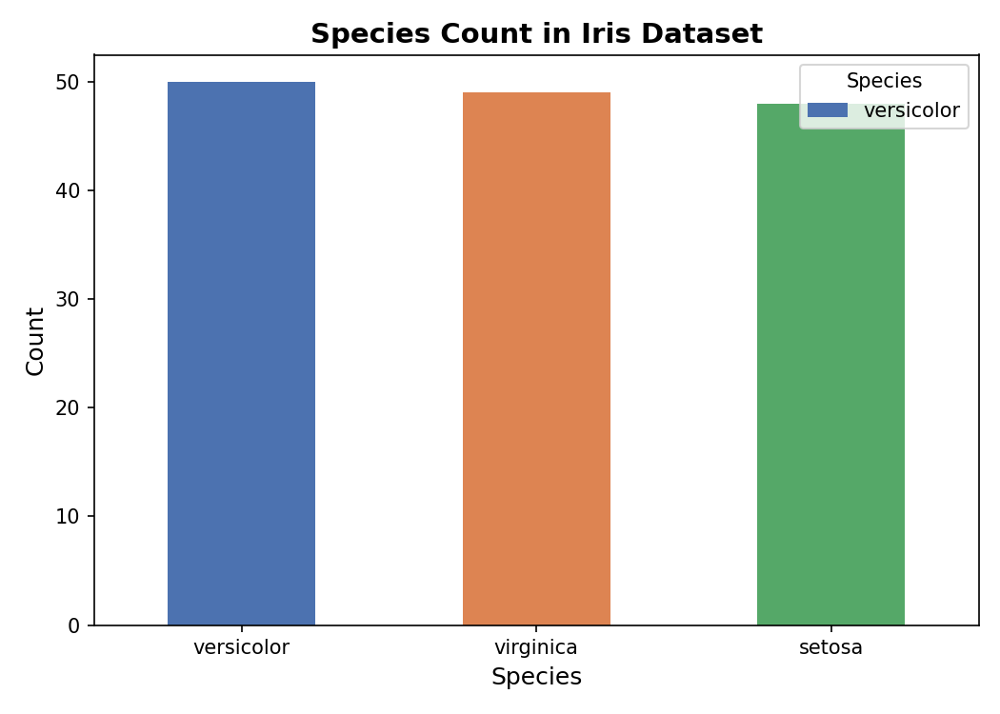
Exploratory Data Analysis
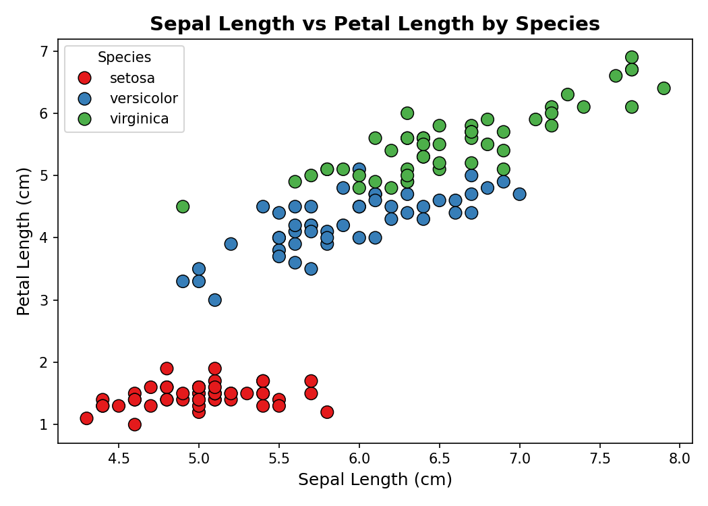
Basic Data Visualization
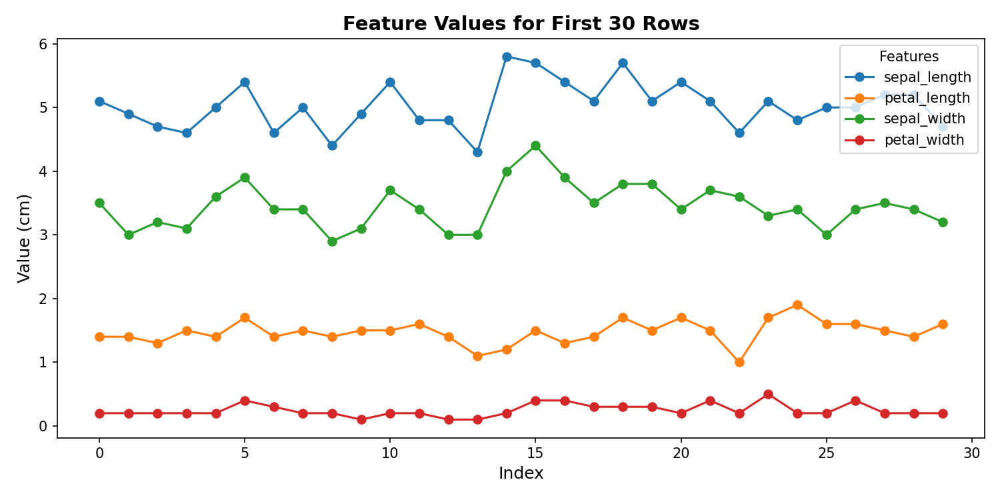
Task 2 — Intermediate
Regression Analysis (Boston Housing)
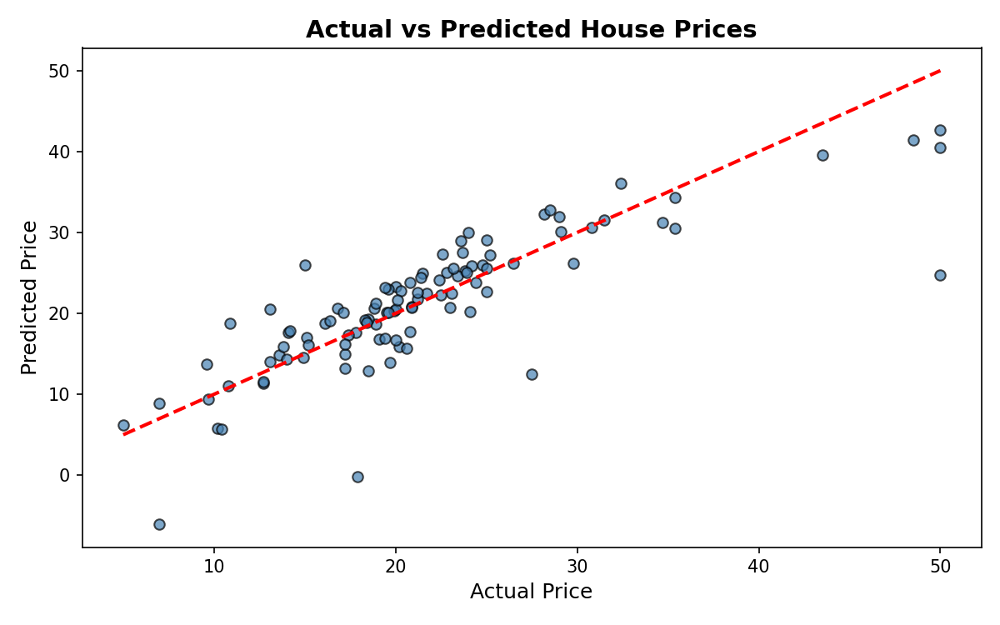
K-Means Clustering
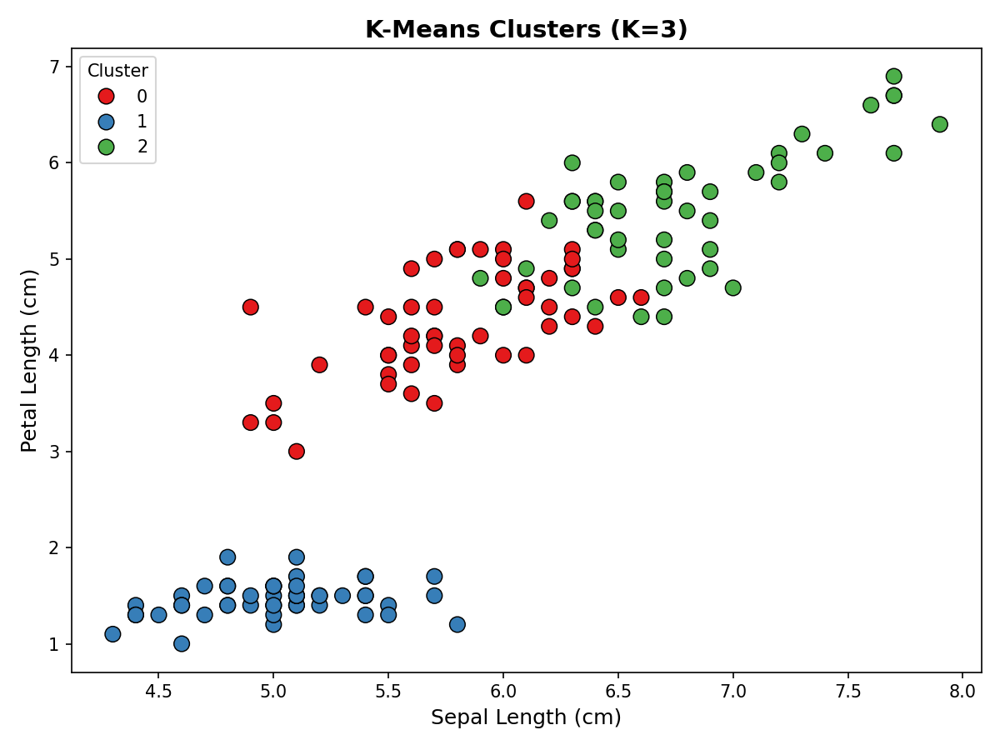
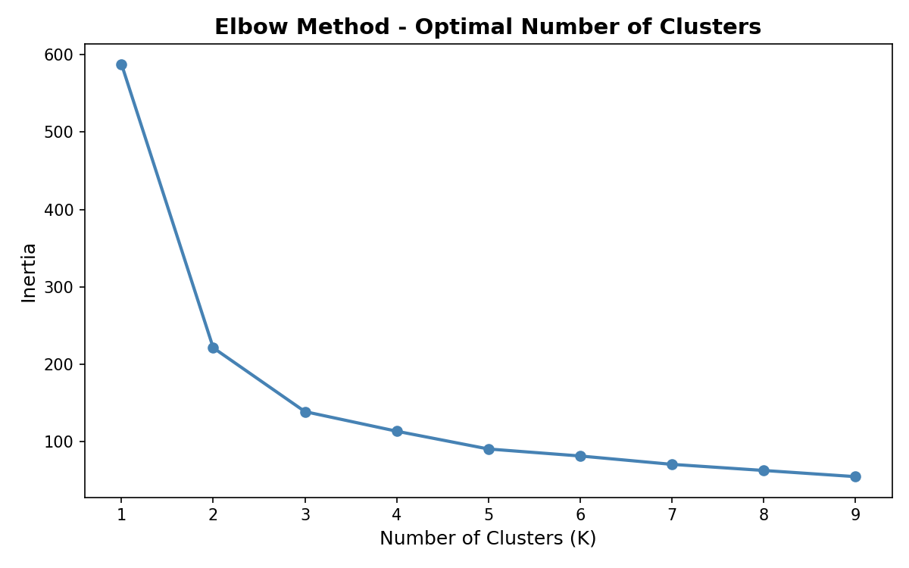
Task 3 — Advanced
Customer Churn Prediction
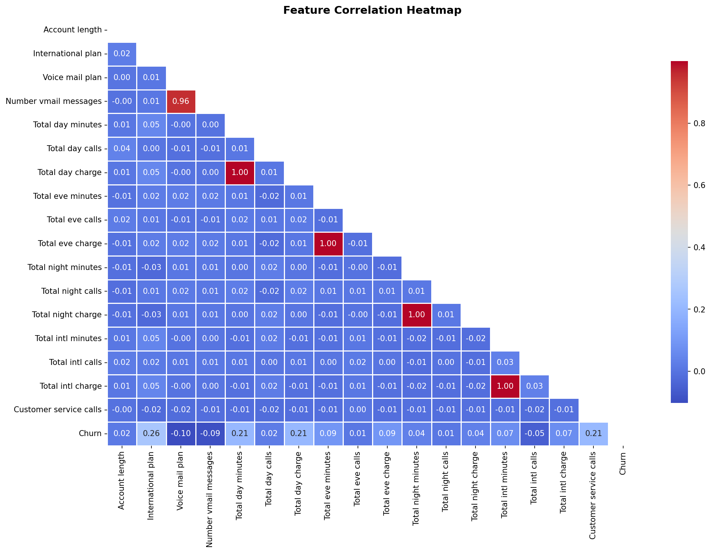
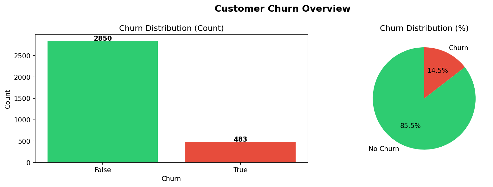
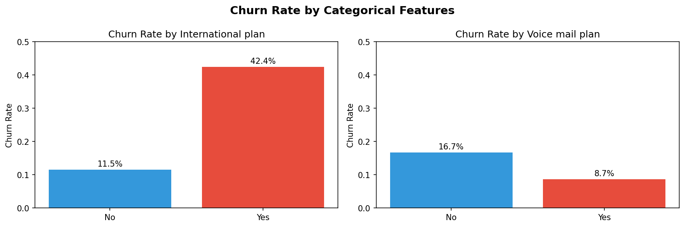
NLP Sentiment Analysis
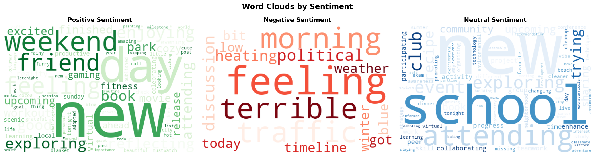
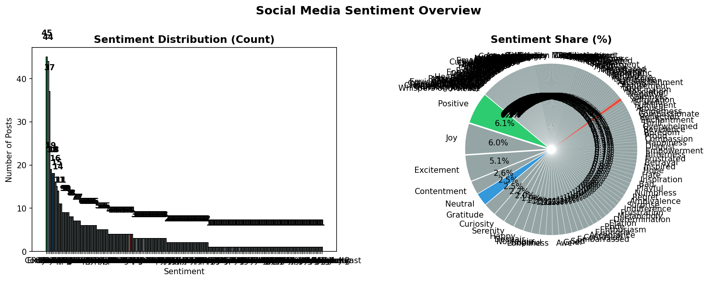
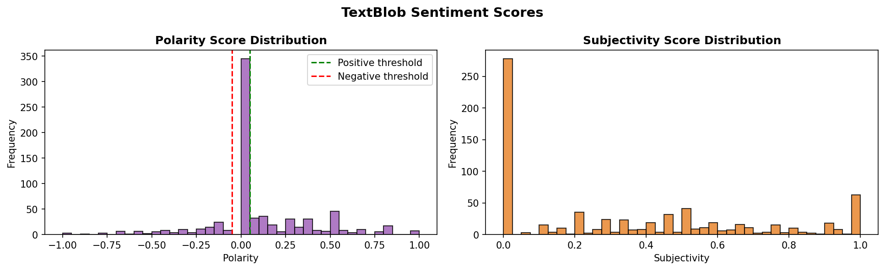
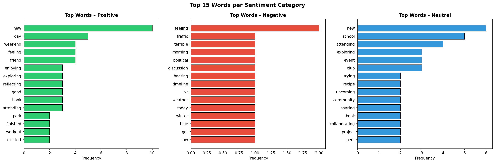
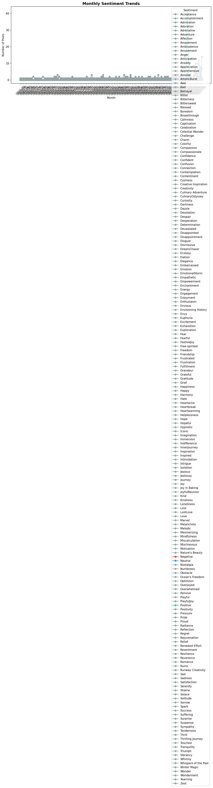